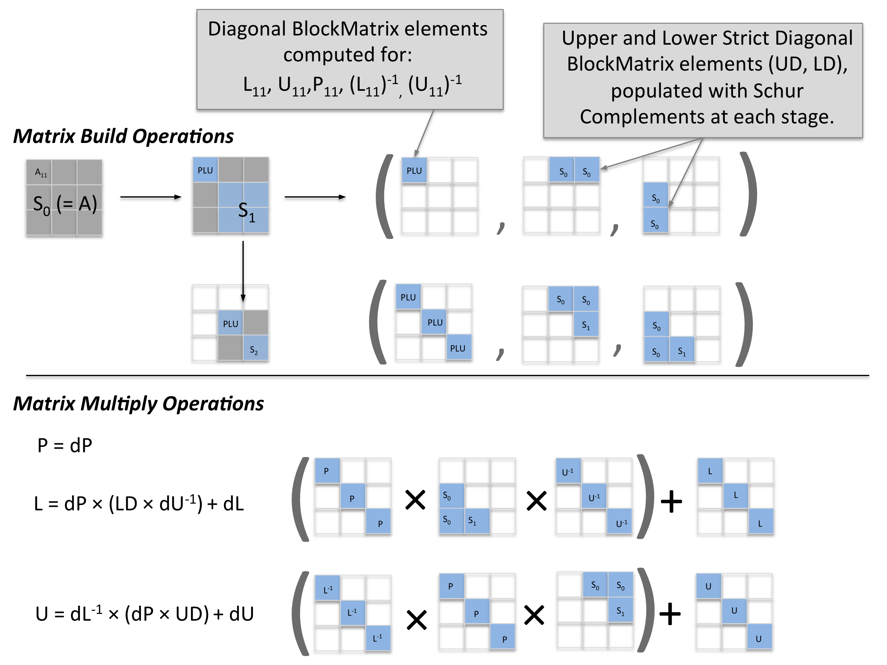

The LU decomposition is a well studied algorithm for decomposing a matrix into a lower diagonal matrix $L$ and an upper diagonal matrix $U$, given as
\begin{equation}
PA = LU\\
P \begin{pmatrix}
a_{11}&\cdots &a_{1n} \\
\vdots& \ddots &\vdots \\
a_{m1}&\cdots & a_{mn}
\end{pmatrix} =
\begin{pmatrix}
\ell_{11}&\ 0 &0 \\
\vdots& \ddots &0 \\
\ell_{m1}&\cdots & \ell_{mn}
\end{pmatrix}
\begin{pmatrix}
0&\ \cdots &u_{1n} \\
\vdots& \ddots &\vdots\\
0&\cdots & u_{mn}
\end{pmatrix},
\label{eq:generalLUFactorization}
\end{equation}
where $P$ is a row permutation matrix. blockLU()
returns a Tuple containing the $P,L$ and $U$ BlockMatrix
objects.
This algorithm is a highly stable method for inverting a matrix and solving linear systems of equations that appear in
machine learning applications. Larger linear equations of the type $AX=B$ are usually solved with SGD, BGFS, or other
gradient based methods. Solving these equations at scale to numerical precision should open up possiblities for new algorithms within MLlib, as well as other applications.
It scales as ~$N^3$, for a BlockMatrix
with $N \times N$ blocks.
Once the decomposition is computed, many other quantities can be easily derived. The most important one,
BlockMatrix.solve(), and is
described in the next section.
Example
import org.apache.spark.mllib.linalg.distributed.{BlockMatrix}
import org.apache.spark.mllib.linalg.{Matrix=>SparkMatrix,Matrices=>SparkMatrices}
import org.apache.spark.mllib.linalg.{DenseMatrix}
val blocks: Seq[((Int, Int), SparkMatrix)] = Seq(
((0, 0), new DenseMatrix(2, 2, Array(1.0, 2.0, 3.0, 2.0))),
((0, 1), new DenseMatrix(2, 2, Array(2.0, 1.0, 3.0, 5.0))),
((1, 0), new DenseMatrix(2, 2, Array(3.0, 2.0, 1.0, 1.0))),
((1, 1), new DenseMatrix(2, 2, Array(1.0, 2.0, 0.0, 1.0))),
((0, 2), new DenseMatrix(2, 1, Array(1.0, 1.0))),
((1, 2), new DenseMatrix(2, 1, Array(1.0, 3.0))),
((2, 0), new DenseMatrix(1, 2, Array(1.0, 0.0))),
((2, 1), new DenseMatrix(1, 2, Array(1.0, 2.0))),
((2, 2), new DenseMatrix(1, 1, Array(4.0))))
val rowsPerBlock = 2; val colsPerBlock = 2;
val A =
new BlockMatrix(sc.parallelize(blocks), rowsPerBlock, colsPerBlock)
val PLU = A.blockLU
val P = PLU._1
val L = PLU._2
val U = PLU._3
// computing a fast residual...top and bottom matrices only
val residual = L.multiply(U).subtract(P.multiply(A))
val error = residual.toLocalMatrix.toArray.reduce(_ + Math.abs(_) )
println( "error (sb ~6.7e-16): " + error.toString )How it Works
The LU decomposition of $A$ can be written as four block matrices, given as
\begin{align}
PA & = LU\\
\begin{pmatrix}
P_1 A_{11}&P_1 A_{12} \\
P_2 A_{21}&P_2 A_{22}
\end{pmatrix}
& = \begin{pmatrix}
L_{11}&0 \\
L_{21}&L_{22}
\end{pmatrix}
\begin{pmatrix}
U_{11}&U_{12} \\
0&U_{22}
\end{pmatrix} \\
& = \begin{pmatrix}
L_{11}U_{11}&L_{11}U_{12} \\
L_{21}U_{11}&L_{21}U_{12}+L_{22}U_{22}
\end{pmatrix}.
\label{eq:basicLUBlockDecomposition}
\end{align}
Once the blocks are defined, we can then solve each matrix quadrant individually.
\begin{align}
P_1 A_{11} & = L_{11}U_{11} & \Rightarrow & (P_{1},L_{11},U_{11}) & = & \text{LU}_{LOCAL}(A_{11}) \label{eq:A11Solve} \\
P_1 A_{12} & = L_{11}U_{12} & \Rightarrow & U_{12} & = & L_{11}^{-1}P_1 A_{12} \label{eq:U12Solve} \\
P_2 A_{21} & = L_{21}U_{11} & \Rightarrow & L_{21} & = &P_2 A_{21}U_{11}^{-1} \label{eq:L21Solve}\\
P_2 A_{22} & = L_{21}U_{12}+L_{22}U_{22} & \Rightarrow & (P_{2},L_{22},U_{22}) & = & \text{LU}_{RECURSIVE}(S) \label{eq:A22Solve}\\
\end{align}
where $A_{11}$ is chosen to be a single block, so that the Breeze library can be called to compute $\eqref{eq:A11Solve}$. The Breeze library will return the $P_{1},L_{11}$ and $U_{11}$ matrices.
Equation $\eqref{eq:A22Solve}$ is a recursive call that generates successive calculations of the Schur Complement, given as
\begin{equation}
S = A_{22} - L_{21} U_{12}.
\label{eq:SchurComplementInitialForm}
\end{equation}
In this form, there is a dependency on the calculation of $\eqref{eq:A11Solve}$. An equivalent form of the Schur complement can be used by substituting equations $\eqref{eq:U12Solve}$ and $\eqref{eq:L21Solve}$, giving
\begin{equation}
S = A_{22} - A_{21} A_{11}^{-1} A_{12},
\label{eq:SchurComplementFinalForm}
\end{equation}
which allows for the calculation of equation $\eqref{eq:A22Solve}$ with no dependency on equation $\eqref{eq:A11Solve}$, resulting in a slight increase in parallelism at the expense of recomputing the inverse of $A_{11}$ on a separate process.
Equations $\eqref{eq:U12Solve}$ and $\eqref{eq:L21Solve}$ are computed with
BlockMatrix.multiply() operations.
The Schur Complement in $\eqref{eq:A22Solve}$ is computed using $\eqref{eq:SchurComplementFinalForm}$ with a
BlockMatrix.multiply()
operation and passed recursively to the next iteration. In this way, $P_2$ is never explicitly calculated,
but is built up as a set of $P_1$ matrices. The computation completes when the Schur Complement is a single block.
Instead of building the solution incrementally, and using more frequent but smaller block matrix operations, we construct large BlockMatrix structures, and carry out the multiplication at the end of the calculation. This should leverage the optimizations present in the BlockMatrix.multiply() routine more effectively. The matrices formed to carry out the operations are described int the in the figure below.

The Matrix multiply operations shown in the figure are generalizations of equations $\eqref{eq:A11Solve}$, $\eqref{eq:U12Solve}$, and $\eqref{eq:L21Solve}$.
BlockMatrix.solve() calls the LU Factorization
method to solve the linear system of equations $AX=B$ for $X$.
The method of forward subsitution solution is used. This method is is described
here, for elements of a matrix, and
and the generalization to blocks using BlockMatrix.solve()
is described briefly here.
For a Linear system of equations $AX=B$, where $A$ is an $N \times N$ matrix, and $X$ and $B$ are
BlockMatrix objects of with $N$
row blocks and $W$ column blocks. $B$ can have any number of columns, including 1. The number of row and columns
per block must be the same, however. BlockMatrix.solve(B)
will return $X$ as a BlockMatrix object
with the same dimensions of $B$.
The forward substitution equations are straightforward do obtain in two steps. The equation $AX=PB$
can be expressed as $LUX=\widehat{B}$. First, the solution to $LY=\widehat{B}$ for $Y$ is obtained, followed by
solving $UX=Y$ for $X$.
Expanding $LY=\widehat{B}$ as BlockMatrix.multiply()
operations gives
\begin{align}
\widehat{B}_m &=& \sum_{i=1}^{m}L_{m,i}Y_m \\
&=& L_{m,m}Y_m + \sum_{i=1}^{m-1}L_{m,i}Y_m. \\
\end{align}
The solution for the $m$th row of $Y$ (which contains $W$ column elements) in terms of previous rows with the following recurrence relation
\begin{equation}
Y_m = L_{m,m}^{-1}\left [ \widehat{B}_m-\sum_{i=1}^{m}L_{m,i}Y_m\right ].\\
\end{equation}
Once $Y$ is obtained, a similar method is applied to solve $UX=Y$. Here we build the solution from the last row block, so the indexing is reversed. Letting $\widetilde{m}=N-m+1$ and expanding the multiplication terms gives
\begin{align}
Y_{\widetilde{m}} &=& \sum_{i=\widetilde{m}}^{N}U_{\widetilde{m},i}X_{\widetilde{m}} \\
&=& U_{\widetilde{m},\widetilde{m}}X_{\widetilde{m}} + \sum_{i=\widetilde{m}+1}^{N}U_{\widetilde{m},i}X_{\widetilde{m}}. \\
\end{align}
$X$ is obtained, starting with the bottom row block as $\widetilde{m}=N$ and incrementing to $\widetilde{m}=1$, using
\begin{equation}
X_\widetilde{m} = U_{\widetilde{m},\widetilde{m}}^{-1}\left[ Y_{\widetilde{m}}-\sum_{i=\widetilde{m}+1}^{N}U_{\widetilde{m},i}X_\widetilde{m}\right ].\\
\end{equation}
Example
import breeze.linalg.{DenseMatrix => BDM}
import org.apache.spark.mllib.linalg._
import org.apache.spark.mllib.linalg.distributed.BlockMatrix
// square matrix, but not fully populated in edge blocks.
val blocksForLU: Seq[((Int, Int), Matrix)] = Seq(
((0, 0), new DenseMatrix(2, 2, Array(1.0, 2.0, 3.0, 2.0))),
((0, 1), new DenseMatrix(2, 2, Array(2.0, 1.0, 3.0, 5.0))),
((1, 0), new DenseMatrix(2, 2, Array(3.0, 2.0, 1.0, 1.0))),
((1, 1), new DenseMatrix(2, 2, Array(1.0, 2.0, 0.0, 1.0))),
((0, 2), new DenseMatrix(2, 1, Array(1.0, 1.0))),
((1, 2), new DenseMatrix(2, 1, Array(1.0, 3.0))),
((2, 0), new DenseMatrix(1, 2, Array(1.0, 0.0))),
((2, 1), new DenseMatrix(1, 2, Array(1.0, 2.0))),
((2, 2), new DenseMatrix(1, 1, Array(4.0))))
val A = new BlockMatrix(sc.parallelize(blocksForLU), 2, 2)
val B = new BlockMatrix(sc.parallelize(Seq( //5x7 B vector (7 columns of 5 row B)
((0, 0), new DenseMatrix(2, 2, Array( 0, 1, -1, 2))),
((0, 1), new DenseMatrix(2, 2, Array(-2, -1, -3, -2))),
((0, 2), new DenseMatrix(2, 2, Array(-4, -3, -5, -4))),
((0, 3), new DenseMatrix(2, 2, Array(-5, -6, -7, -7))),
((1, 0), new DenseMatrix(2, 2, Array( 2, 3, 1, 2))),
((1, 1), new DenseMatrix(2, 2, Array( 3, 1, -1, 4))),
((1, 2), new DenseMatrix(2, 2, Array(-2, -1, -3, -2))),
((1, 3), new DenseMatrix(2, 2, Array(2, 1, 3, 2))),
((2, 0), new DenseMatrix(1, 2, Array( 0, 5))),
((2, 1), new DenseMatrix(1, 2, Array( 1, 3))),
((2, 2), new DenseMatrix(1, 2, Array( 0, 0))),
((2, 3), new DenseMatrix(1, 2, Array( 1, 1))))), 2, 2)
val X = A.solve(B)
val residual = A.multiply(X).subtract(B)
val error = residual.toLocalMatrix.toArray.reduce(_ + Math.abs(_))
println("error" + error.toString)//sb 2.25e-14